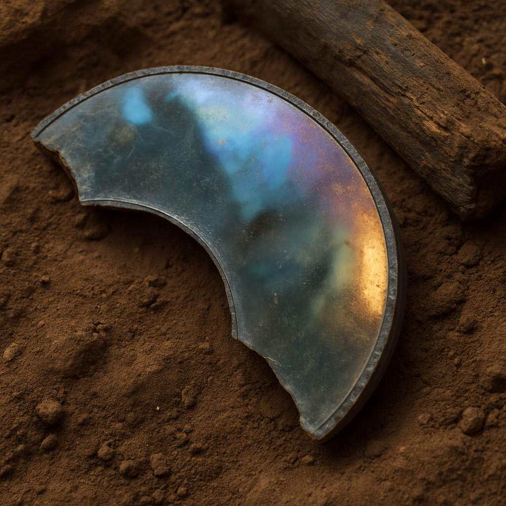
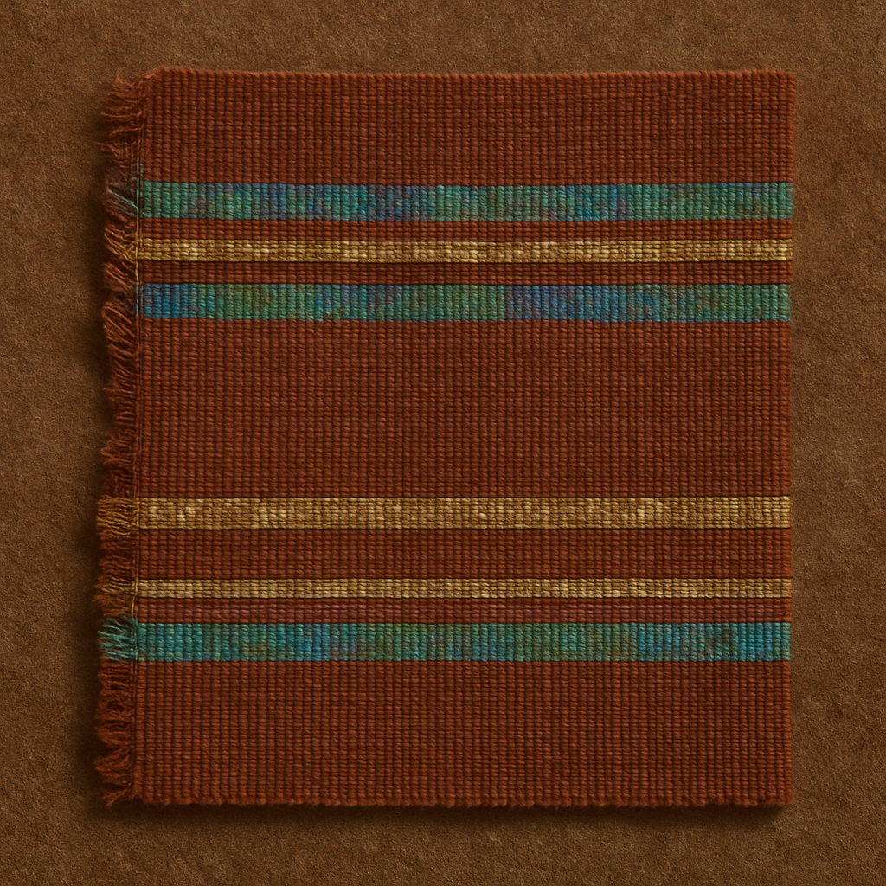

The repeating triplet grooves may symbolize rhythmic cycles of record-keeping—either celestial tracking or communal accountancy. The embedded copper-alloy filaments, faintly refractive, hint at a symbolic merging of natural crystal growth with human order.
Comparison
Similar to Wall Panel fragment ARK-2 but with denser filaments
Cut from translucent silicate crystal and inlaid with copper-alloy filaments,
this slab exemplifies the extraordinary care with which the Light Refractory
people worked with luminous materials. Its shallow grooves, carved in repeating
triplets, reveal a cultural preoccupation with rhythm and sequence—whether
astronomical cycles, communal counts, or ceremonial recitations.
The high polish inside the grooves and faint traces of mineralized organics suggest repeated handling,
as though meaning was activated through touch as much as through sight.
Found at the Prism Terrace alongside beads, a textile remnant, and a copper pin,
the slab belonged to a world where information was not confined to words but
expressed through light, surface, and communal performance. We call it a “ledger,”
but its role may have bridged record and ritual, inscription and reflection.
In respecting its ambiguity, we honor the possibility that knowledge here was luminous, rhythmic, and collective.
— Dr. Senka Marrow, Lead Archaeologist

Resonance Mirror (fragment, lower arc)
Click photo for more details
Resonance Mirror (fragment, lower arc)
Name
Resonance Mirror (fragment, lower arc)
Material
Metallic glass veneer on ceramic composite backing; iridized oxide film
Size/Weight/Shape
Arc fragment ~19×12×0.9 cm; ~420 g; original Ø ~56 cm
Physical Properties
Highly reflective, iridescent; conchoidal fracture; organic adhesive traces on back
Mineralized frame, four stone weights, folded inscribed ribbon
Burial or Habitat Context
Indoor alcove within subterranean vault
Symbolism
Its iridescent surface and rim notch motif suggest it carried not only practical reflective power but a ritualized role in channeling or dispersing light. The arc itself could represent transition phases—such as dawn to dusk, or mortal to ancestral realms.
Comparison
Parallels smaller hand-mirrors B-23; different backing composite
This shimmering fragment, once part of a large circular mirror nearly half a meter across, was
crafted from metallic glass on a ceramic backing with an iridized oxide film. Excavated from a
subterranean alcove, its surface still catches light with spectral hues, hinting at its role as
more than a simple reflective device. The grooved rim and concentric abrasion marks suggest mounting and
repeated use, yet the absence of soot implies it was protected from everyday smoke or fire.
Culturally, such mirrors may have been instruments of transition—used to mediate between dawn and dusk,
or between mortal and ancestral realms. The arc form itself embodies passage and cycle. Found alongside
stone weights and an inscribed ribbon, the mirror fragment appears embedded in both ritual display and symbolic record-keeping.
In this piece, light is not merely reflected—it is refracted into meaning, transforming a surface into a medium of cultural memory.
— Dr. Senka Marrow, Lead Archaeologist
Seam-Spindle of the Spectral Loom
Click photo for more details
Seam-Spindle of the Spectral Loom
Name
Seam-Spindle of the Spectral Loom
Material
Darkstone core with silver-like alloy inlay; mineralized fiber twine
Size/Weight/Shape
27 cm × 2.6 cm; ~310 g; slightly tapered cylinder
Physical Properties
Matte dark core; polished inlay bands; end perforations; axial scoring
Midline polish; rotational abrasion at ends; pigment flecks on sheathing
Manufacture Clues
Lathe-like turning; hammered inlay into channels; drilled perforations pre-inlay
Found With
Two loom weights, mineralized fiber bundles, small pigment pot
Burial or Habitat Context
Collapsed domestic workshop/loom room
Symbolism
The alternating inlay stripes echo themes of duality and balance—day/night, warp/weft, seen/unseen. As a tool for weaving, its symbolic role likely extended beyond textiles to weaving social bonds and cosmological order.)
Comparison
Similar to Spindle ARK-3a; rarer inlay on this example
Seam-Spindle of the Spectral Loom (AO-S79-F37)
Recovered from the collapsed “Weaver’s Niche” at ARK-3, this spindle fragment
reveals the interweaving of daily practice and cosmological vision. Its
darkstone core, banded with a silver-like alloy inlay, shows careful workmanship:
perforations at each end, axial scoring, and a midline polish worn smooth
from rotational use. Mineralized fibers and flecks of pigment remain adhered,
linking it unmistakably to the act of weaving.
Yet the alternating light and dark bands suggest meaning beyond craft.
To the community that shaped it, duality—day and night, warp and weft,
seen and unseen—may have been encoded into the very tools of production.
Found alongside loom weights, fiber bundles, and a small pigment pot,
this spindle may have served as both instrument and emblem: a device for weaving
cloth, but also for weaving balance into social and spiritual life.
Through this object, we glimpse a worldview in which the practical
and the symbolic were never separate threads.
— Dr. Senka Marrow, Lead Archaeologist
Anthropology
Partial Spectral Burial: Adult (B-12)
Click photo for more details
Partial Spectral Burial: Adult (Specimen B-12)
Name
Partial Spectral Burial: Adult (B-12)
Material
Human osteological remains with mineralized textiles and crystalline residues
The arc of beads across the cranial vault may symbolize a protective horizon or celestial bridge for the deceased. The crystalline powder within the cranial cavity suggests ritual intent to infuse or preserve inner luminosity.
When I stand before Burial B-12, I do not see “remains” alone, I see relationships persisting across time.
Here, fragments of a skull and thoracic bones lie in quiet company with mineralized textiles and a cluster of beads.
These materials remind us that death was not the severing of ties but their continuation.
The beads near the chest may once have formed a necklace or sewn adornment,
tokens of recognition in the passage to the ancestral realm. The preserved cloth fibers,
though mineralized, speak of patterned skill — of hands weaving meaning into fabric.
This burial tells us that memory was tactile, luminous, and communal.
We are asked to look past the bones and glimpse the gestures of care that enfolded a life.
Deciduous skeletal fragments; shell disks; carved bone pendant; pigment-stained textile
Size/Weight/Shape
Tray impression ~24×18 cm; shell disks Ø 1.2 cm; pendant 3.6×1.4 cm
Physical Properties
Fragile ossicles; polished shell; thin textile with red pigment traces
Estimated Age
~1,270 BP (organic residue on textile)
Preservation State
Assemblage intact; skeletal elements friable
Location Found
Nursery Niche, House Floor Context H-14; 34.093N, −118.253W (fictional)
Likely Purpose
Personal/burial/commemorative assemblage
Evidence of Use
Pendant edge wear; shell handling polish; outer textile soot
Manufacture Clues
Rotary-drilled shell; incised bone pendant; balanced warp threads
Found With
Ceramic cup fragment, charred seeds, pigment sachet
Burial or Habitat Context
Sub-floor cache in nursery area
Symbolism
The pendant’s symmetrical incisions and alternating weave imply symbolic efforts to guide fragile new life into balance with ancestral cycles. This assemblage embodies continuity—binding the infant to community memory even after death.
Comparison
Similar to H-7 infant cache; different pendant motif/colorant
The Infant Assemblage, catalogued as I-3, offers a moving testament to love and loss.
Here, the fragile bones of a child rest with shell disks, a carved pendant,
and a folded textile stained with pigment. These are not random inclusions but a constellation of meaning.
The shells shimmer like tears, luminous tokens for a soul’s journey. The pendant, carved with care,
suggests both protection and commemoration. The folded textile, deliberately creased, enfolded memory as much as it did the child.
This assemblage reminds us that even the briefest of lives were honored through ritual. Communities wove grief into matter,
transforming mourning into lasting remembrance.
For me, this context is a profound reminder of continuity:
of how societies have always met loss with gestures of tenderness.
— Professor Orien Thal, Cultural Anthropologist

Ceremonial Body Wrap Fragment with Photoglyphic Bands (RW-2)
Click photo for more details
Ceremonial Body Wrap Fragment with Photoglyphic Bands (Specimen RW-2)
Name
Ceremonial Body Wrap Fragment with Photoglyphic Bands (RW-2)
High thread count; iridescent bands; frayed edges; laminated flat metal threads
Estimated Age
~1,230–1,260 BP (contextual; RC pending)
Preservation State
Partial fragment; pigment partly degraded
Location Found
Funerary Cache FC-4 (adjacent to BP-12); 34.086N, −118.260W (fictional)
Likely Purpose
Funerary/ceremonial textile
Evidence of Use
Creases and fold lines; abrasion at wrap points; no tissue residues detected post-conservation
Manufacture Clues
Alternating warp density; sharp stenciled/resist pigment bands; metal threads laid on final weft pass
Found With
Crystalline sachet, mirror fragment, bead cluster
Burial or Habitat Context
Sealed cache adjacent to interment
Symbolism
The triadic linear bands likely represented recurring cycles—birth, life, and afterlife. The shimmering pigment and metal inlays suggest a symbolic effort to cloak the body in light, ensuring passage into an illuminated afterworld.
Comparison
Technique like RW-1, but RW-2 is more blue-rich
Ceremonial Body Wrap Fragment (RW-2) (AP-F38-H56) — Collection Note
This textile fragment, RW-2, carries the shimmer of ceremony. Iridescent pigment bands and
fine metallic threads are woven into its structure, creating not only fabric but language.
Textiles such as these were more than garments — they were inscriptions of identity and cosmology,
enfolding the wearer in symbolic order.
Found in funerary association, this fragment likely once wrapped a body, its shimmer catching and refracting light in the passage between worlds.
To weave such cloth was to weave meaning, connecting warp and weft to cycles of life and death. In its incomplete but radiant form,
the fragment speaks of textiles as enduring vessels of story and memory.
When I reflect on RW-2, I see not a fragment but a thread still binding us to the
people who made and wore it.
— Professor Orien Thal, Cultural Anthropologist
Histories
Prismatic Ledger Slab
Prismatic Ledger Slab
Artifact ID:
AO-P17-L98
Title:
Prismatic Ledger Slab
Culture:
Prism Terrace Community (fictionalized, late ritual-habitation complex)
Estimated Age:
1,200–1,450 BP (contextual; charcoal assay pending)
Material:
Translucent silicate crystal with embedded copper-alloy filaments
Origin:
ARK-7 “Prism Terrace” L4; 34.092N, −118.254W
What the Experts Believe
This rectangular slab of translucent silicate crystal, measuring 62 by 28 centimeters and weighing just over six kilograms, is among the most technically refined artifacts recovered from the site designated ARK-7 “Prism Terrace.” The piece is cut and ground from a natural crystal outcrop, its surface polished to a planar finish. Three features stand out to the careful observer: narrow laminar banding in the crystal, faint copper-alloy filaments embedded within, and shallow grooves incised in parallel triplets across the surface.
Close examination reveals micro-abrasion along the grooves and a high polish within them, suggesting intentional, repeated contact—possibly the movement of tools, markers, or hands across the slab. Faint traces of mineralized organics indicate it may have been used in conjunction with other materials, though their precise nature remains uncertain. Its physical setting was a habitation terrace, where it was found in association with glassy bead clusters, a carbonized textile fragment, and a copper pin. Together, these objects suggest that the slab was integrated into practices of adornment, memory, and display.
We interpret this piece as a “ledger slab”: a surface designed to record or transmit knowledge. The triplet groove motif may have represented cycles—celestial, seasonal, or communal—in ways that merged practical record-keeping with ritualized performance. The copper filaments, deliberately sealed beneath the polish, refract light faintly. This interplay of natural crystal properties and human intervention hints at a symbolic desire to unify natural growth with social order.
Comparative Note
Yet uncertainty is essential to our understanding. What we call “ledger” may have been, for its makers, more than a tool: a luminous stage upon which knowledge was enacted, remembered, or renewed in community. Such ambiguity resists narrow classification and reminds us that information in ancient societies was not confined to writing alone. It could be inscribed in crystal, woven into textile, or carried in ritual gesture.
Cautionary Note on Interpretation
As an archaeologist, I am mindful of how interpretations risk reducing complexity to utility. My work is guided by cultural semiotics, reading the object as symbol as well as artifact, and by a decolonial commitment to avoid flattening indigenous epistemologies. This slab is a record, a reflector, and a reminder—that memory itself can be luminous.
On Display Courtesy of
The Helix Foundation for Material Memory
Resonance Mirror (fragment, lower arc)
Resonance Mirror (fragment, lower arc)
Artifact ID:
AO-D14-L68
Title:
Resonance Mirror (Fragment, Lower Arc)
Culture:
Low-Light Annex Assemblage
Estimated Age:
~1,100–1,300 BP (thermoluminescence context)
Material:
Metallic glass veneer on ceramic composite backing; iridized oxide film
Origin:
Chamber C, “Low-Light Annex”; 34.089N, −118.258W
What the Experts Believe
This polished arc once formed part of a circular mirror over half a meter wide. Crafted with metallic glass veneer fused to a ceramic composite base, its surface still displays shifting iridescent hues. Unlike common domestic mirrors, this fragment bears organic adhesive traces and a rim notch motif, suggesting careful mounting within a larger frame. Concentric abrasion patterns on its surface indicate repeated use, while its soot-free state implies it was preserved in a protected or ritual setting.
The mirror was recovered from the “Low-Light Annex”, a subterranean chamber where light was scarce and carefully managed. Its reflective and refractive qualities, coupled with its discovery alongside stone weights, a mineralized frame, and an inscribed textile ribbon, suggest that this object served as more than a tool of self-regard. It may have functioned as a ritual mediator of light—capturing, dispersing, or redirecting illumination during ceremonies.
From a cultural semiotic perspective, the arc form itself holds symbolic weight, representing cycles of dawn and dusk, or transitions between mortal and ancestral realms. The craftsmanship—thin veneer, pressed fiber ceramic, resin adhesives—demonstrates deliberate technological control, embedding natural brilliance into a cultural artifact of meaning.
Comparative Note
In working with such pieces, I am reminded of moments when textile patterns once dismissed as “mere decoration” revealed calendrical significance through dialogue with Indigenous storywork. This mirror fragment may similarly encode layered functions—practical, symbolic, and cosmological. As interpreters, our responsibility is to keep these possibilities open, acknowledging both scholarly insight and the perspectives of descendant communities for whom such objects may remain sacred.
Cautionary Note on Interpretation
Yet the fragment also resists certainty. Was it a ceremonial focal point, a cosmological register, or an instrument of ancestral communion? Each interpretation reminds us that meaning in material culture emerges at the intersection of material, context, and community memory.
On Display Courtesy of
The Low-Light Institute for Optical Heritage
Seam-Spindle of the Spectral Loom
Seam-Spindle of the Spectral Loom
Artifact ID:
AO-S79-F37
Title:
Seam-Spindle of the Spectral Loom
Culture:
Weaver’s Niche Tradition
Estimated Age:
~900–1,100 BP (sealed beam cavity)
Material:
Darkstone core with silver-like alloy inlay; mineralized fiber twine
Origin:
ARK-3 “Weaver’s Niche”; 34.091N, −118.255W
What the Experts Believe
This spindle, recovered from the collapsed “Weaver’s Niche” at site ARK-3, offers insight into both daily practice and symbolic order. Measuring 27 cm in length, the artifact consists of a matte darkstone core with carefully hammered silver-like alloy inlay bands. Its form shows technical precision: drilled perforations at the ends, axial scoring along the body, and lathe-like turning. The spindle bears traces of use—rotational abrasion at its tips, midline polish from repeated handling, and pigment flecks adhered to mineralized fibers—confirming its role in textile work.
As a weaving tool, the spindle was practical, used to twist and tension fibers. Yet its alternating light and dark bands invite further interpretation. The contrast may have symbolized cycles of balance: day and night, warp and weft, the visible and the unseen. Found alongside loom weights, fiber bundles, and a pigment pot, the spindle may have anchored weaving not only as a household craft but as a cosmological act. Textiles themselves often served as carriers of meaning—encoding narratives, calendrical rhythms, and identity in color and pattern. The inlayed spindle, then, may have embodied the principle that weaving creates not only cloth but social cohesion and cosmic order.
Its manufacture demonstrates a blending of skill and intention. The inlay was inserted into pre-carved channels and sealed with hammering, suggesting that its makers valued both durability and aesthetic contrast. Unlike other spindles from the same context, the presence of metallic inlay marks this object as exceptional, perhaps reserved for ritual weaving or as the property of a master weaver.
Comparative Note
Working with textile fragments across sites, I have learned that what once seemed ornamental often encoded entire systems of knowledge. This spindle challenges us to see weaving not only as domestic labor but as a means of world-making—binding together memory, rhythm, and relation. It stands as both artifact and metaphor: a seam that joins craft to cosmos.
Cautionary Note on Interpretation
Interpretively, this artifact reminds us that tools are never only tools. Their forms and embellishments carry values and metaphors, weaving cultural meaning into physical function. Just as threads intertwine, so too do the practical and the symbolic.
On Display Courtesy of
Loomwrights’ Guild Archive (International Chapter)
Partial Spectral Burial: Adult (B-12)
Partial Spectral Burial: Adult (Specimen B-12)
Artifact ID:
AP-K75-Y39
Title:
Partial Spectral Burial: Adult (Specimen B-12)
Culture:
Terrace Burial Group (fictionalized)
Estimated Age:
~1,200 BP (contextual, pending further stratigraphic confirmation)
Material:
Human skeletal remains with associated mineralized textiles and bead cluster
Origin:
Excavation locus, terrace-edge feature
What the Experts Believe
The interment identified as B-12, or the Partial Spectral Burial, preserves skeletal remains surrounded by mineral inclusions that shimmer even in dim light. Soil analysis revealed flakes of mica-like material and pigment residues deliberately pressed into bone surfaces and sediment layers. Such choices suggest an intentional orchestration of brilliance. The luminous effect, fragile but persistent, implies a cultural logic in which burial was not simply the concealment of a body but a continuation into altered states of visibility.
The layering of pigment into bone fissures further signals that color was not decorative but ontological—an element of being that could be carried forward. If the inclusions were meant to refract or glow, they may have conjured a spectral presence, affirming that the dead retained agency within communal life. The body thus became a site of transformation, its radiance echoing dawn, dusk, or celestial movements that framed human mortality within broader cycles.
Placed within a terrace chamber, the burial context implies shared viewing. Rather than isolating the deceased, the shimmering burial may have functioned as a focal point for gatherings, where light’s play across the pigments enacted remembrance and continuity. It is equally possible that such burials marked lineage, with refractive substances binding the dead to an enduring cosmological order.
Comparative Note
Comparable use of reflective media appears in Appalachian mica burials and Mesoamerican obsidian offerings, where luminosity mediated contact with ancestors.
Cautionary Note on Interpretation
We must avoid assuming that “light” held universal transcendental value; for this society it may have symbolized cycles, kinship, or other meanings we cannot fully reconstruct.
Early Terrace Domestic-Funerary Context (fictionalized)
Estimated Age:
~1,100 BP (associated with pigment-treated textiles)
Material:
Infant remains with shell disks, carved pendant, and folded textile fragment
Origin:
Infant remains with shell disks, carved pendant, and folded textile fragment
What the Experts Believe
The Infant Assemblage I-3 is among the most poignant yet instructive finds. The burial contained the remains of a very young child, accompanied by glassy beads, charred textile fragments, and a modest copper-alloy pin. The beads, though tiny, show surface wear, indicating that they circulated before their final deposition. This suggests they were heirlooms or tokens of ancestral continuity rather than new adornments. Their presence at the child’s side signals not wealth but belonging—the infant was enfolded into generational exchange despite their brief life.
The carbonized textile fragments, delicate yet patterned, hint at wrapping or swaddling. To wrap was to hold, to protect, and to frame the body within fibers imbued with symbolic resonance. The copper pin, simple but deliberate, recalls broader traditions of fastening and binding cloth. Here, it may have symbolized kinship bonds rather than functional fastening, a way of securing the child into collective identity.
These objects together reveal a practice in which infants were not marginal but honored. The burial’s care demonstrates that even the youngest were inscribed into cycles of memory. By accompanying the child with tokens of continuity, the community may have asserted that life, however brief, remained woven into cosmology.
Comparative Note
Infant burials across Europe and the Andes often include small heirlooms, indicating communal belonging over individual possession.
Cautionary Note on Interpretation
Contemporary readers may emphasize “loss,” but these practices might have marked renewal or the child’s integration into ancestral return.
On Display Courtesy of
The Ancestral Strata Trust
Ceremonial Body Wrap Fragment with Photoglyphic Bands (RW-2)
Ceremonial Body Wrap Fragment with Photoglyphic Bands (Specimen RW-2)
Artifact ID:
AP-F38-H56
Title:
Ceremonial Body Wrap Fragment with Photoglyphic Bands (Specimen RW-2)
Culture:
Ritual Weaving Tradition
Estimated Age:
~1,150 BP (based on associated burial context)
Material:
Pigmented textile fragment with metallic-thread inlay
Origin:
Funerary deposit, ritual wrap context
What the Experts Believe
The textile fragment RW-2 is a rare survival of ceremonial fabric. Measuring only a portion of its original scale, the fragment nonetheless reveals remarkable sophistication. Its warp-and-weft structure is interlaced with pigment bands and fine inlaid metal threads, still glimmering faintly despite centuries of burial. The pigments shift under angled light, producing an iridescent quality that would have animated the surface in ritual contexts.
Evidence suggests the textile once formed part of a full body wrap. Such wrappings were not utilitarian coverings but ritual mediators, enfolding the individual in luminous symbols that bridged earthly and ancestral domains. The play of light across pigment and metal thread would have transformed the body into a radiant presence, visible to mourners and, perhaps, to deities. Textiles of this scale and craft carried weight equal to monuments, functioning as portable cosmologies in which stories, calendars, and genealogies were embedded.
Found within a collapsed domestic space repurposed for ceremonial use, the fragment testifies both to technical mastery and cultural priorities. It reminds us that textiles were among the most sophisticated symbolic media of their time, capable of encoding order, memory, and transition.
Comparative Note
Comparable luminous wrappings appear in Paracas funerary textiles and Mediterranean ritual cloths, where light animated cosmological meaning.
Cautionary Note on Interpretation
We must resist reading this textile merely as ornamentation; its motifs may have been narrative, calendrical, or genealogical in function.
On Display Courtesy of
The Society for Ritual Weaving and Pattern Studies